Existe-t-il un chemin à travers la ville qui emprunte chaque pont exactement une fois ?
En 1736, Euler prouva qu’il n’existe pas de tel chemin. Ce résultat est considéré comme le début de la théorie des graphes.
Graphes
Un graphe est une structure mathématique appropriée pour représenter des relations entre des objets.
Un graphe consiste en un ensemble de sommets reliés par des arêtes.
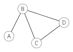
Les sept ponts de Königsberg : modélisation
On peut représenter chaque masse de terre par un sommet, et relier deux sommets par une arête lorsque les deux masses de terre correspondantes sont reliées par un pont.
Dans le graphe ainsi obtenu, la question devient : existe-t-il un chemin dans le graphe qui emprunte chaque arête exactement une fois ?
Graphe : définition
Un graphe \(G = (V, E)\) est défini par son ensemble \(V\) de sommets (vertices en anglais) et son ensemble \(E\) d’arêtes (edges en anglais).
Une arête \((u, v)\) est une paire de sommets, ordonnés ou non.
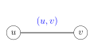
À partir de là, il y a plusieurs types de graphe.
Graphe dirigé
Si les arêtes d’un graphe \(G\) sont des paires ordonnées de sommets, le graphe est dit dirigé.
Le graphe ci-dessous contient l’arête \((A,B)\) mais pas l’arête \((B,A)\).
On dira que \(B\) est voisin de \(A\) ou adjacent à \(A\) (mais \(A\) n’est pas voisin de \(B\)).
Les graphes dirigés sont appropriés pour représenter des situations de flux ou de déplacement entre une source et une destination.
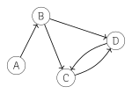
Graphe non dirigé
Si les arêtes d’un graphe \(G\) sont des paires non ordonnées de sommets, le graphe est dit non dirigé.
Dans le graphe ci-dessous, \((A,B)\) et \((B,A)\) dénotent la même arête.
\(A\) et \(B\) sont voisins l’un de l’autre ou adjacents l’un à l’autre.
Les graphes non dirigés sont appropriés pour représenter des relations symétriques entre des objets.
Graphe pondéré
Un graphe (dirigé ou non) est dit pondéré si un poids est associé à chaque arête du graphe.
Selon les applications, les poids peuvent être des nombres entiers ou réels, de n’importe quel signe.
Les graphes pondérés sont appropriés par exemple pour représenter le coût d’emprunter un certain chemin ou de prendre une certaine décision.
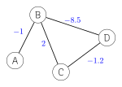
Graphe simple vs multigraphe
Le graphe obtenu dans la modélisation du problème des ponts de Königsberg est en fait un multigraphe. Un multigraphe (dirigé ou non)
permet à plusieurs arêtes de relier la même paire de sommets \((u,v)\) ;
permet à une arête d’avoir la forme \((u,u)\), c’est-à-dire de relier un sommet à lui-même.
Un graphe simple ne permet ni les arêtes « parallèles », ni les arêtes qui relient un sommet à lui-même.
Sauf si spécifié autrement, on considérera toujours des graphes simples.
Exemple d’application : réseaux routiers
On peut représenter un réseau routier par un graphe dirigé et pondéré :
chaque intersection de routes est un sommet ;
chaque segment de route entre deux intersections est une arête dirigée selon le sens de la circulation ;
le poids d’une arête peut être la longueur du segment de route correspondant, ou une estimation du temps nécessaire pour parcourir ce segment de route.
On s’intéresse entre autres à des algorithmes qui calculent le plus court chemin entre deux points (problème d’optimisation).
Exemple d’application : réseaux sociaux
On peut représenter les relations sur un réseau social comme MySpace par un graphe non dirigé :
chaque personne est un sommet ;
il existe une arête entre deux sommets si ces deux personnes sont amies ;
le graphe est non dirigé puisque la relation d’amitié est symétrique.
On s’intéresse entre autres à des questions du type « quels sont les amis d’amis de la personne A ? » ou bien « quelle est la distance entre les personnes A et B ? »
Un réseau social où la relation de « suivi » est non symétrique, comme Twitter, Instagram ou TikTok, sera modélisé par un graphe dirigé.
Représentation d’un graphe en mémoire
Comment stocker un graphe en mémoire ?
Le graphe est complètement décrit par l’ensemble de ses sommets et l’ensemble de ses arêtes. Comment représenter efficacement ces ensembles en mémoire ?
Que veut dire efficacement ?
Espace en mémoire
Temps de parcours des opérations
Quelles sont les opérations qu’on veut pouvoir faire efficacement ?
Cela dépendra de l’application. Est-il plus important de pouvoir…
A. décider rapidement si deux sommets sont reliés par une arête ? B. parcourir efficacement les voisins d’un sommet donné ?
Les deux manières les plus communes pour représenter un graphe en mémoire sont
A. avec une matrice d’adjacence ; B. avec des listes d’adjacence.
Dans ce qui suit, on va toujours considérer un graphe \(G\) avec \(n\) sommets \(0, 1, \ldots, n-1\), et \(m\) arêtes.
Si \(G\) est dirigé, \(m\) peut prendre n’importe quelle valeur entre \(0\) et \(n(n-1)\).
Si \(G\) est non dirigé, \(m\) peut prendre n’importe quelle valeur entre \(0\) et \(n(n-1)/2\).
On remarque qu’un graphe a donc toujours \(O(n^2)\) arêtes.
A. Matrice d’adjacence
Pour représenter \(G\) avec une matrice d’adjacence, on stocke une matrice dont les lignes et les colonnes sont indexées par les sommets de \(G\). Elle contient à la ligne \(u\) et colonne \(v\) :
\(1\) si l’arête \((u,v)\) existe dans le graphe (\(v\) est adjacent à \(u\)) ;
\(0\) sinon.
En Python, on peut représenter une telle matrice avec une liste de taille \(n\) dont chaque élément est une liste de taille \(n\) (un tableau, comme au Cours 5).
Pour le graphe ci-dessous : [[0,1,0,0],[0,0,1,1],[0,0,0,1],[0,0,1,0]]
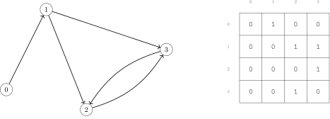
Si \(G\) est non dirigé, la matrice d’adjacence sera symétrique.
Si \(G\) est pondéré, il suffit de remplacer chaque \(1\) dans la matrice par le poids de l’arête correspondante.
B. Liste d’adjacence
Pour représenter \(G\) avec des listes d’adjacence, on stocke, pour chaque sommet de \(G\), une liste de ses voisins.
En Python, on peut stocker ces données dans un dictionnaire dont les clés sont les sommets et les valeurs les listes des voisins des sommets.
Pour le graphe du haut : {0:[1], 1:[2,3], 2:[3], 3:[2]}
Pour le graphe du bas : {0:[1], 1:[0,2,3], 2:[1,3], 3:[1,2]}
Pour un graphe pondéré, on peut stocker des tuples (sommet, poids) dans la liste des voisins.
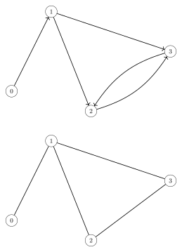
On pourrait aussi utiliser une liste où l’élément i est la liste des voisins du sommet i, mais un dictionnaire nous permet d’avoir des sommets nommés autrement que \(0, 1, \ldots, n-1\).
Représentation de graphes
On a vu deux manières de représenter un graphe en mémoire :
A. la matrice d’adjacence, B. les listes d’adjacence (stockées dans un dictionnaire).
Laquelle choisir ? Cela dépend
des opérations qu’on veut effectuer sur le graphe,
du coût en temps de ces opérations dans chaque représentation,
de l’espace mémoire occupé par chaque représentation.
Le coût des opérations dépend directement de la façon dont les listes et les dictionnaires sont implémentés en Python.
On va donc d’abord étudier ces deux structures de données, avant de comparer les deux représentations.
Une référence est l’adresse en mémoire de l’élément auquel elle se réfère.
Chaque référence occupe un bloc de taille constante en mémoire.
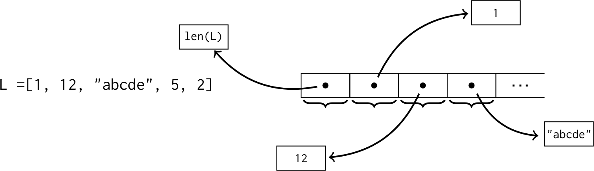
Listes Python : accéder à un élément
Pour accéder à un élément L[i], il faut :
calculer l’adresse de la référence à l’objet correspondant ;
accéder à l’élément en mémoire.
Ces opérations se font en temps constant. On peut donc accéder à un élément L[i] (pour le lire ou le modifier) en temps \(\Theta(1)\).
Listes Python : append et pop
Pour effectuer une opération L.append(), il faut :
modifier la longueur de la liste ;
insérer une référence à un nouvel objet en fin de liste.
On peut donc considérer que ces deux opérations se font en temps constant1, et donc qu’on peut effectuer une opération L.append() en temps \(\Theta(1)\).
De même, on peut effectuer une opération L.pop()en temps constant.
Listes Python : insert et remove
Pour insérer un élément à l’index i avec L.insert(i, x), il faut décaler vers la « droite » tous les éléments à partir de l’indice i.
De même, pour enlever un élément avec L.remove(x), L.pop(i) ou del, il faut décaler vers la « gauche » tous les éléments suivants.
Ceci est nécessaire afin de maintenir la propriété de l’accès en temps constant.
Pour une liste de taille \(n\), les opérations d’insertion ou de suppression à un index arbitraire prennent donc un temps \(\Theta(n)\) au pire des cas.
Contrairement aux listes, les dictionnaires permettent la lecture, l’insertion et la suppression d’une clé arbitraire en temps moyen\(\Theta(1)\), grâce à l’utilisation de fonctions de hachage (qui dépassent le cadre de ce cours).
Soit D un dictionnaire de taille \(n\) (contenant \(n\) paires clé-valeur).
Opération
Temps de parcours moyen
lecture D[key], D.get(key)
\(\Theta(1)\)
insertion/écriture D[key] = val
\(\Theta(1)\)
suppression D.pop(key), del D[key]
\(\Theta(1)\)
Matrice vs listes d’adjacence : espace
La matrice d’adjacence prend un espace \(\Theta(n^2)\) en mémoire indépendamment du nombre d’arêtes dans le graphe.
Les listes d’adjacence prennent un espace \(\Theta(n+m)\) en mémoire :
le dictionnaire contient \(n\) éléments ;
soit \((u,v)\) une arête de \(G\). Si \(G\) est dirigé, \(v\) apparaît dans la liste de \(u\) ; s’il est non dirigé, \(v\) apparaît dans la liste de \(u\) et \(u\) dans la liste de \(v\). Chaque arête contribue donc \(1\) (si \(G\) est dirigé) ou \(2\) (si \(G\) est non dirigé) à la taille totale des listes ;
la taille totale de toutes les listes est donc \(m\) (\(G\) dirigé) ou \(2m\) (\(G\) non dirigé).
Par exemple :
si \(m = \Theta(n)\), alors une représentation par listes d’adjacence prend un espace \(\Theta(n)\) ;
si \(m = \Theta(n\log n)\), alors cette représentation prend un espace \(\Theta(n\log n)\) ;
si \(m = \Theta(n^2)\), alors cette représentation prend un espace \(\Theta(n^2)\).
Sauf si le graphe a « beaucoup » d’arêtes (\(m = \Theta(n^2)\)), la matrice d’adjacence occupe beaucoup plus de place en mémoire que les listes d’adjacence.
Matrice vs listes d’adjacence : temps
Selon les opérations qu’on veut effectuer, il vaudra mieux adopter une représentation par matrice d’adjacence ou par listes d’adjacence.
Déterminer s’il existe une arête entre deux sommets :
se fait en temps constant dans une représentation par matrice (il suffit de lire G[u][v]) ;
se fait en temps \(\Theta(n)\) au pire des cas dans une représentation par listes d’adjacence (il faut parcourir toute la liste des voisins de \(u\)).
Parcourir les voisins d’un sommet \(u\) :
se fait en temps \(\Theta(n)\) dans une représentation par matrice (il faut parcourir toute la ligne G[u]) ;
se fait en temps proportionnel au nombre de voisins de \(u\) dans une représentation par listes d’adjacence (\(\Theta(n)\) au pire des cas, mais souvent moins…).
Comme nous nous intéressons principalement à des algorithmes qui parcourent un graphe, à partir de maintenant tous nos graphes seront implémentés sous forme de listes d’adjacence.
Chemins, distance
Soit un graphe \(G\) et deux sommets \(u\) et \(v\).
Un chemin de longueur \(\ell\) entre \(u\) et \(v\) est une suite de sommets \(u_0, u_1, \ldots, u_\ell,\ \ell \geq 0\) tous distincts, avec \(u_0 = u\) et \(u_\ell = v\), tels que \(u_i\) et \(u_{i+1}\) sont liés par une arête pour tout \(0 \leq i \leq \ell - 1\).
Un plus court chemin entre \(u\) et \(v\) est un chemin entre \(u\) et \(v\) de longueur minimale.
La distance entre \(u\) et \(v\) est la longueur d’un plus court chemin entre \(u\) et \(v\).
S’il existe un chemin entre \(u\) et \(v\), on dit que \(v\) est atteignable depuis \(u\).
Exemple : graphe non dirigé
Il existe plusieurs chemins entre \(0\) et \(4\) :
0, 1, 4
0, 2, 4
0, 1, 2, 4
0, 2, 1, 4
0, 3, 5, 4
Les chemins les plus courts sont 0, 1, 4 et 0, 2, 4.
Les chemins inverses (par ex. 4, 1, 0) sont des chemins entre 4 et 0.
Les sommets 0 et 4 sont à distance 2 l’un de l’autre.
Exemple : graphe dirigé
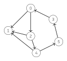
Le seul chemin entre \(0\) et \(4\) est 0, 2, 4.
Le sommet 4 est à distance 2 du sommet 0.
Le seul chemin entre \(4\) et \(0\) est 4, 5, 3, 0.
Le sommet 0 est à distance 3 du sommet 4.
Parcourir des graphes
Étant donné un graphe \(G\) et un sommet \(s\) de \(G\) (la « source »), un algorithme de parcours permet d’explorer (ou de visiter), à partir de \(s\), tous les sommets de \(G\) qui sont atteignables depuis \(s\).
Un grand nombre d’algorithmes de graphes sont basés sur des algorithmes de parcours.
Pour l’instant, on va simplement afficher les sommets du graphe dans l’ordre dans lequel ils sont parcourus.
Les algorithmes de parcours de graphe tombent en général dans deux catégories : le parcours en largeur et le parcours en profondeur.
Parcours en largeur (BFS)
Le parcours de \(G\) en largeur (Breadth-First Search) à partir d’un sommet \(s\) explore les sommets de \(G\) en commençant par \(s\), puis par les sommets à distance 1 de \(s\), puis les sommets à distance 2, …
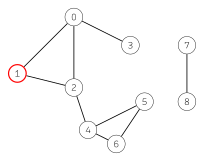
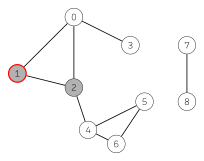
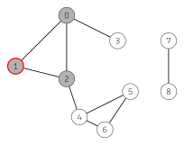
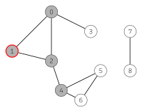
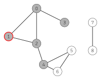
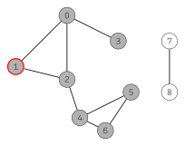
BFS : spécification
L’algorithme BFS prend en entrée une représentation par listes d’adjacence d’un graphe \(G\), et un sommet \(s\) de \(G\).
Il affiche les sommets de \(G\)atteignables depuis \(s\), avec la garantie suivante :
Si la distance entre \(s\) et \(u\) est plus petite que la distance entre \(s\) et \(v\), \(u\) apparaîtra avant \(v\) dans le parcours.
L’algorithme maintient un ensemble de sommets à parcourir (une liste « à faire ») et choisit dans cet ensemble un prochain sommet à parcourir à chaque étape.
Le choix de la structure de données pour cet ensemble de sommets (la liste « à faire ») est important pour l’efficacité de l’algorithme.
On présente aujourd’hui une version de BFS qui fonctionne correctement mais qui n’a pas un temps de parcours optimal.
a_parcourir est la liste « à faire » ; vu[u] vaut True dès que u a été ajouté à cette liste, pour ne jamais l’y ajouter deux fois.
BFS : parcours
On illustre le déroulement de BFS sur le graphe de la section précédente, en montrant le contenu de la liste a_parcourir et les sommets visités à chaque étape (le sommet en tête de liste, en rouge, est celui qui va être traité ensuite).
a_parcourir = [0]
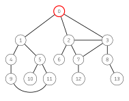
a_parcourir = [1, 2, 3]
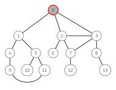
a_parcourir = [2, 3, 4, 5]
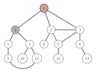
a_parcourir = [3, 4, 5, 6, 7]
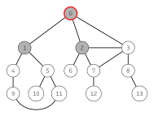
a_parcourir = [4, 5, 6, 7, 8]
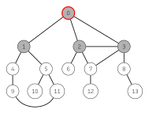
a_parcourir = [5, 6, 7, 8, 9]
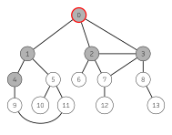
a_parcourir = [6, 7, 8, 9, 10, 11]
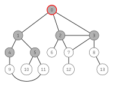
a_parcourir = [7, 8, 9, 10, 11]
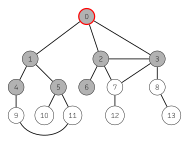
a_parcourir = [8, 9, 10, 11, 12]
a_parcourir = [9, 10, 11, 12, 13]
a_parcourir = [10, 11, 12, 13]
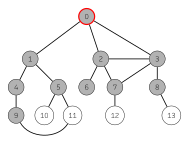
a_parcourir = [11, 12, 13]
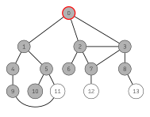
a_parcourir = [12, 13]
a_parcourir = [13]
a_parcourir = []
BFS : ordre de parcours
L’ordre exact dans lequel BFS visite les sommets dépend de l’ordre des voisins dans chaque liste d’adjacence : pour un même graphe, deux dictionnaires différents peuvent donner deux parcours différents.
Cependant, tous les parcours BFS valides respectent la règle suivante :
Si la distance entre \(s\) et \(u\) est plus petite que la distance entre \(s\) et \(v\), \(u\) apparaîtra avant \(v\) dans le parcours.